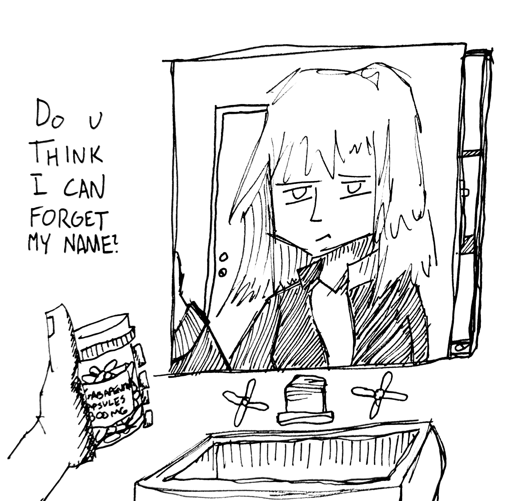

>>>PROJECTS
This page is focused on showcasing the various projects I have worked on, be that on my own or with others. In other words, if it doesn't fit cleanly on another page and I want to show it off, it goes here. Make sure to go check out my art page as well!
LAST TRAIN HOME [WORKING TITLE]
My new mixed-medium project, LAST TRAIN HOME, now has its first entry out!
LAST TRAIN HOME is the story of ██████, a young reprobate woman facing the end of the civilization she thought she knew in the midst of a collapse of systems, structure, and meaning. I don't have a consistent schedule or anything yet, just working on it as I desire. If you want updates, check out my insta or twitter!
Gnar (de_gnar)


Gnar is a map for Counter Strike: Global Offensive (I am working on a CS:2/Source 2 port), created for the 2021 Mapcore layout competition. It is a 5v5 competitive-focused defuse map set within an American skate park, heavily inspired by movement tech of Counter Strike, my own hobby of skating, and an honorable mention to the Call of Duty: Black Ops 2 multiplayer map Grind.
The map can be found by its Steam Workshop submission , and if I can track down any vods or the scoring sheet for the map in the competition, I'll list it below!
Sakura (de_sakura)


Sakura is a map for Counter Strike: Global Offensive (CS:2/Source 2 port TBD), created for the 2020 Mapcore Wingman mapping competition. It is a 2v2 competitive-focused 'Wingman' defuse map set in a Japanese town caught in the transition into the internet age. It was the first mapping project which I completed the full production process for, from planning and greyboxing to creation of art assets and polishing for player experience. It performed well in the competition, placing in the upper half of all 100+ contestants, an accomplishment I am proud of for the stage in my learning map-making that I was at, and for having done it entirely on my own.


The map can be found by its Steam Workshop submission , and if I can track down any vods or the scoring sheet for the map in the competition, I'll list it below!
Misc. Mapping Projects
Industry (de_industry)
The first map I ever created for Counter Strike in 2017, filling me with much of the love and passion which I have for level design today. The initial spark came from experiences with Halo's Forge mode, particularly the fleshed-out form it took in Halo 5, but this was where I discovered the power and freedom which dedicated modding/mapping tools could bring. This map has no clear theme, vaguely set around a water treatment facility with an under-construction expansion, and was never fully detailed. Despite this, it served as an incredible learning tool and holds many dear memories in my mind. Currently trying to track down the photos of it which are out there, as I have lost track of them over the years.
Sakura2 (de_sakura2)


Sakura2 was a short-lived wingman (2v2) mapping project which I worked on in 2021. It was a follow-up to Sakura, and was somewhat exerimental in the contents of its layout. These layout choices were controversial and made the map contentious amongst those who would frequently be roped into playtests for my projects, but ones which I remain proud and fond of and stand by to this day. Namely, the map was incredibly vertical and had an eccentric layout for the bomb-site which offered a drop-down into water, a crawlspace, and a middle route to enter which saw players asked to fight in more close quarters than they are often used to.
Silicon (de_silicon)


Another short-lived project which began soon before I burned out on Counter-Strike mapping until I created de_Gnar, Silicon was another more experimental 5v5 Defusal layout which saw limited testing and iteration. It was set within the main R&D center of a prominent tech company, and featured increased focus on one-way drops and distinct layers of verticality. While I was quite proud of the odd layout and unique gameplay elements it incorporated, playtesters were not as fond of it.
Polis (de_polis)


Polis was a defuse map heavily inspired by Inferno, featuring a main and an "alt" middle route to fight over. The map began its existence as a quick note thrown down for the main middle area taken while at a volleyball tournament, which would soon get its own standalone blockout. A few months later, a new plan iterating on that idea was drawn out, and Polis came into existence. The map was fun to play, but didn't see much development due to burnout with Counter-Strike at the time. It is a map which I would like to return to at some point.
Angels Have No Eyes
A game jam project by me and DanDotPng. Dan was responsible for the programming, 3D modeling and environment texture work, while I worked on art for UI elements and detail textures. The game can be found on its itch.io page, and a selection of my contributions are included in this post!